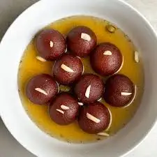

Gulab Jamun
Ingredients
- Sugar
- Khoya
- Oil
Recipe
- Sugar is desolve in water. to make the gulab jamun juice and in her juice use ilaichi sent.
- khoya is mix in maidya with some dryfruits, orange colour and some half of litre water
- oil is used for fry gulabjamun
- then, finally your gulab jamun is ready.

Burfi
Ingredients
- Sugar
- Khoya
- masala
Recipe
- Sugar is desolve in water. to make the gulab jamun juice and in her juice use ilaichi sent.
- khoya is mix in maidya with some dryfruits, orange colour and some half of litre water
- masala is used for make better look of burfi
- then, finally your burfi is ready.